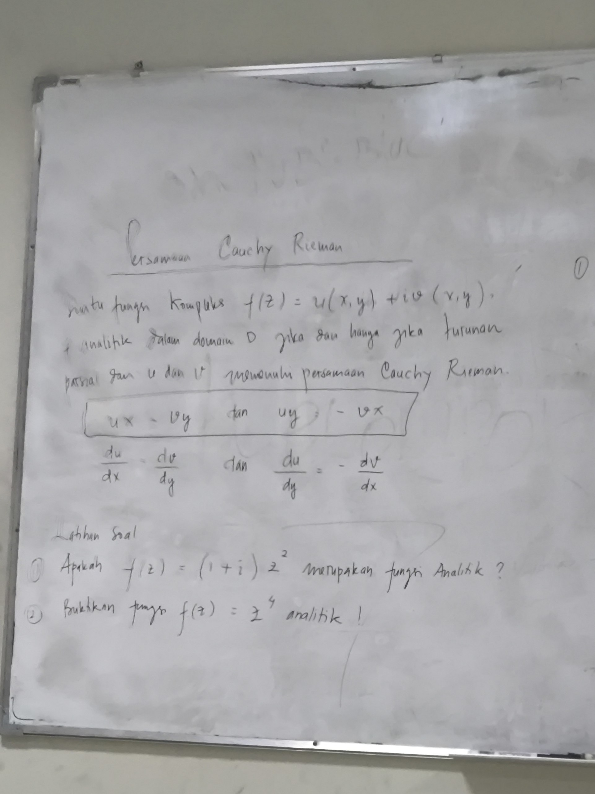

Penurunan matematis syarat Cauchy-Riemann, pembuktian identitas Laplace tingkat dua, serta bedah tuntas soal papan tulis.

Suatu bilangan kompleks dituliskan $z = x + iy$ dengan $x, y \in \mathbb{R}$. Fungsi bernilai kompleks didefinisikan sebagai:
Di mana $u(x, y) = \text{Re}[f(z)]$ adalah komponen riil dan $v(x, y) = \text{Im}[f(z)]$ adalah komponen imajiner.
Fungsi $f(z)$ dikatakan analitik pada domain $D$ jika $f'(z)$ ada di setiap titik pada $D$. Jika $f(z)$ analitik di seluruh bidang $\mathbb{C}$, maka $f(z)$ disebut fungsi utuh (entire function).
Agar limit turunan $f'(z) = \lim_{\Delta z \to 0} \frac{f(z+\Delta z) - f(z)}{\Delta z}$ bernilai tunggal dari lintasan horizontal maupun vertikal, turunan parsial pertama harus memenuhi:
Syarat Cukup Keanalitikan: Jika keempat turunan parsial pertama ($u_x, u_y, v_x, v_y$) ada dan kontinu pada domain $D$, serta memenuhi persamaan Cauchy-Riemann, maka $f(z)$ pasti analitik pada $D$.
Suatu fungsi bernilai riil $g(x, y)$ disebut fungsi harmonik pada domain $D$ jika memiliki turunan parsial kedua yang kontinu dan memenuhi persamaan Laplace:
$$\nabla^2 g = \frac{\partial^2 g}{\partial x^2} + \frac{\partial^2 g}{\partial y^2} = 0$$Jika $f(z) = u + iv$ analitik, maka $u$ dan $v$ otomatis harmonik. Pembuktian formalnya:
Dengan langkah serupa, dapat dibuktikan bahwa $\frac{\partial^2 v}{\partial x^2} + \frac{\partial^2 v}{\partial y^2} = 0$. Pasangan $(u, v)$ ini disebut Harmonic Conjugate.
Diketahui $z = x + iy$, maka $z^2 = x^2 - y^2 + 2ixy$.
$$f(z) = (1+i)(x^2 - y^2 + 2ixy) = (x^2 - 2xy - y^2) + i(x^2 + 2xy - y^2)$$Diperoleh: $u(x, y) = x^2 - 2xy - y^2$ dan $v(x, y) = x^2 + 2xy - y^2$.
Turunan parsial pertama:
$$u_x = 2x - 2y, \quad u_y = -2x - 2y$$ $$v_x = 2x + 2y, \quad v_y = 2x - 2y$$Evaluasi:
Kesimpulan: $f(z) = (1+i)z^2$ Analitik di seluruh $\mathbb{C}$.
Turunan parsial kedua:
$$\frac{\partial^2 u}{\partial x^2} = 2, \quad \frac{\partial^2 u}{\partial y^2} = -2 \implies \nabla^2 u = 2 + (-2) = 0$$ $$\frac{\partial^2 v}{\partial x^2} = 2, \quad \frac{\partial^2 v}{\partial y^2} = -2 \implies \nabla^2 v = 2 + (-2) = 0$$Kesimpulan: Komponen $u$ dan $v$ Harmonik di seluruh $\mathbb{R}^2$.
Ekspansi $(x + iy)^4$ dengan mengingat $i^2 = -1, i^3 = -i, i^4 = 1$:
$$(x+iy)^4 = x^4 + 4ix^3y - 6x^2y^2 - 4ixy^3 + y^4 = (x^4 - 6x^2y^2 + y^4) + i(4x^3y - 4xy^3)$$Diperoleh: $u = x^4 - 6x^2y^2 + y^4$ dan $v = 4x^3y - 4xy^3$.
Kesimpulan: $f(z) = z^4$ Terbukti Analitik pada seluruh $\mathbb{C}$.
Kesimpulan: $u$ dan $v$ Terbukti Harmonik di seluruh $\mathbb{R}^2$.
Jika diketahui $u(x, y)$ dan diminta mencari $f(z)$ analitik:
| Konsep Inti | Rumus Kunci | Fungsi dalam Ujian |
|---|---|---|
| Cauchy-Riemann | $u_x = v_y$ dan $u_y = -v_x$ | Uji diferensiabilitas dan keanalitikan fungsi |
| Fungsi Harmonik | $\frac{\partial^2 g}{\partial x^2} + \frac{\partial^2 g}{\partial y^2} = 0$ | Uji solusi persamaan Laplace / potensial |
| Harmonik Konjugat | $v(x, y)$ yang memenuhi C-R bersama $u$ | Membangun kembali fungsi analitik $f(z) = u + iv$ |
| Entire Function | Analitik di setiap $z \in \mathbb{C}$ | Karakter polinomial kompleks seperti $z^4$ dan $(1+i)z^2$ |